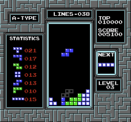

The history of Tetris scales back all the way to 1984, where a Russin scientist named Alexey Pajitnov developed the very first Tetris that most of all know. In 1988, Video game designer and publisher Henk Rogers discovers Tetris at a Las Vegas tradeshow and is instantly hooked on the game. Soon after, Henk's company, Bullet-Proof Software, releases Tetris on the PC and NES in Japan. It becomes a "software blockbuster," selling over two million copies.
GIF of NES Tetris
As time moved on, more and more development for Tetris was under way. For example, Tetris was released on more devices such as:
When it comes to Tetris, people will notice that there are two types of Tetris, one called Classic Tetris, and the other being called Modern Tetris.
Even though we're on the year 2022, people will still often want to play Classic Tetris instead. With that in mind, Tetris has gone big enough where tournaments happen and people will gather and VS. eachother in order to win a prize pot.
Clip of Classic Tetris Tournament 2019
On the other side, we have Modern Tetris. To compare these two, Classic Tetris plays more slow and precise, but Modern Tetris favors playing fast and efficient. Although not created by the actual owners of Tetris, there have been multiple creations such as Jstris and TETR.IO. Similary, there are also tournaments for cash.
TETR.IO Cup #3